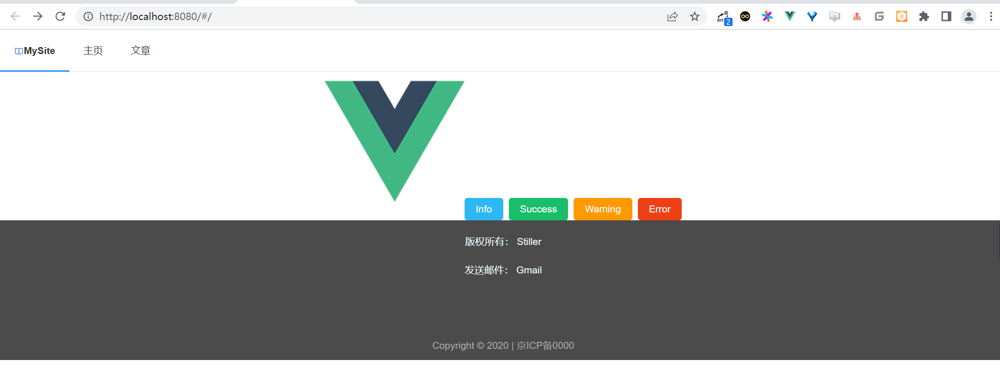

20. 主要页面的开发¶
本节编辑一些简单的页面，包括具体的文章分类页面、文章展示页面和主页展示页面等。
20.1. 1.主页¶
主页应当显示轮播图、导航菜单、位置列表和footer等内容，导航菜单、footer和文章列表属于可以被复用的内容，所以将其编写为组件。
首先设计代码结构，本项目所有的页面文件都放置在views文件夹中，所有的组件文件都放置在src/components文件夹中。
改造App.vue这个Vue.js的入口文件，将所有的路由页面都挂载在该页面中。
本项目的所有页面都包含顶部的导航和尾部的footer，将这两部分编写为组件。
在src/components文件夹中创建这两个组件，一个命名为NavView.vue，作为导航组件；
另一个命名为FooterView.vue，作为尾部组件。
导航组件获取服务器API中的NavMenu组件，该请求会在Created()生命周期发起，代码如下：
<script>
export default {
name: "NavView",
data() {
return {
menu: [],
index: 'MySite',
theme1: 'light',
userBtn: false,
username: ''
}
},
created() {
//获取导航菜单
this.$api.get('getNavMenu').then((res) => {
//写数据
this.menu = res.data
})
},
updated() {},
}
</script>
在页面中调用iView的Menu组件，使用v-for循环输出API获取数据，使用router-link组件设定超链接，代码如下：
<template>
<div>
<Menu mode="horizontal" :theme="theme1" active-name="1">
<MenuItem name="1">
<div class="main">
<Icon type="md-book"/>
<router-link to="/">
{{index}}
</router-link>
</div>
</MenuItem>
<MenuItem v-for="item in menu" :name="item.name" :key="item.name">
<router-link :to="item.src">
{{item.name}}
</router-link>
</MenuItem>
</Menu>
</div>
</template>
<style scoped>
.main {
font-weight: 600;
}
a {
color: #2f2f2f;
}
</style>
接着编写Footer.vue组件，和导航组件类似，获取API提供的数据并且循环输出，完整的代码如下：
<script>
export default {
name: "FooterView",
data() {
return {
footer: [],
icp:"Copyright © 2020 | 京ICP备0000"
}
},
created() {
//获取footer菜单
this.$api.get('getFooter').then((res) => {
this.footer = res.data
})
}
}
</script>
这里没有使用动态的ICP备案信息，如果读者有兴趣，也可以从API中获取，接着编写页面。
获取的后台数据存在3个属性，其中，name表示显示，src表示连接，text表示显示在name后方的具体描述。
<template>
<div class="footer">
<div v-for="item in footer" :key="item.name" class="footer-div">
{{item.name}}：
<router-link :to="item.src">
{{item.text}}
</router-link>
</div>
<div class="icp">
{{icp}}
</div>
</div>
</template>
<style scoped>
.footer {
background: #4a4b4a;
color: azure;
min-height: 200px;
position: relative;
}
.footer a{
color: aliceblue;
}
.footer-div{
padding-top: 20px;
}
.icp{
position: absolute;
bottom: 10px;
color: darkgrey;
width: 100vw;
}
</style>
编写好两个组件后，接着修改App.vue文件引入这两个组件，修改后的代码如下：
<template>
<div id="app">
<div class="nav">
<NavView></NavView>
</div>
<router-view/>
<div>
<FooterView></FooterView>
</div>
</div>
</template>
<script>
import NavView from '@/components/NavView'
import FooterView from '@/components/FooterView'
export default {
components: { FooterView, NavView}
}
</script>
这样所有的页面都可以显示这两个组件了，页面路径切换时这两个组件也不变，显示效果如图
接着编写主页。在views文件夹下新建IndexView.vue文件用来编写主页面代码。页面路由文件router/index.js代码如下：
import { createRouter, createWebHashHistory } from 'vue-router'
import IndexView from "@/views/IndexView"; IndexView
const routes = [
{
path: '/',
name: 'Index',
component: IndexView
},
......
]
const router = createRouter({
history: createWebHashHistory(),
routes
})
export default router
主页面应当包含两个文章列表，文章列表本身也是一个可被复用的组件，所以提取为一个组件，在components文件夹中新建articleList.vue文件。
文章组件本身不需要通过接口获取任何数据，只需要显示上级组件中传递的数据。这里采用props方式传输数据，需要指定单击后跳转的链接，代码如下：
<template>
<Card>
<template #title>{{title}}</template>
<!-- <p slot="title">{{title}}</p>-->
<p v-for="item in list" :key="item.id" class="item">
<router-link :to="'/article/'+item.id">
{{item.title}}
</router-link>
</p>
</Card>
</template>
<script>
export default {
name: 'ArticleList',
data () {
return {}
},
created () {
},
props: {
title: String,
list: Array
}
}
</script>
<style scoped>
.item{
border-bottom: 1px solid #eee;
padding: 10px;
}
</style>
编写好该组件后，在IndexView.vue文件中引入。首页需要3个数据：热点文章、最新文章列表和轮播图。获取的列表数据中不显示后台没有上线的内容，代码如下：
<script>
import ArticleList from '../components/ArticleList'
export default {
name: 'Home',
components: {
ArticleList
},
data() {
return {
value2: 0,
pic: [],
list: [],
listTitle: '最新文章',
hotList: [],
hotListTitle: "最热文章"
}
},
created: function () {
//获取主页轮播图
this.$api.get('getIndexPic').then((res) => {
console.log(res.data)
this.pic = res.data
})
//获取所有文章
this.$api.get('getNewArticle').then((res) => {
let rData = res.data.slice(0, 5)
let tData = []
rData.map((item) => {
if (item.id !== 0) {
tData.push(item)
}
})
this.list = tData
})
//获得热点文章
this.$api.get('getHotArticle').then((res) => {
let rData = res.data.slice(0, 5)
let tData = []
rData.map((item) => {
if (item.id !== 0) {
tData.push(item)
}
})
this.hotList = tData
})
}
}
</script>
接着编写相关的页面，主页使用iView中的走马灯插件完成轮播图，对两个应当出现的文章列表采用栅格式布局。完整的代码如下：
<template>
<div>
<!--轮播图-->
<Carousel v-model="value2" loop>
<CarouselItem :key="item.title" v-for="item in pic">
<div class="demo-carousel">
<router-link :to="item.src">
<img :src="item.img"/>
<div>
{{item.title}}
</div>
</router-link>
</div>
</CarouselItem>
</Carousel>
<!--文章列表-->
<div class="article-list">
<row type="flex" justify="space-around" class="code-row-bg">
<i-col span="11">
<article-list :list="list" :title="listTitle"></article-list>
</i-col>
<i-col span="11">
<article-list :list="hotList" :title="hotListTitle"></article-list>
</i-col>
</row>
</div>
</div>
</template>
<script>
import ArticleList from '../components/ArticleList'
export default {
name: 'HomeView',
components: {
ArticleList
},
data () {
return {
value2: 0,
pic: [],
list: [],
listTitle: '最新文章',
hotList: [],
hotListTitle: '最热文章'
}
},
created: function () {
// 获取主页轮播图
this.$api.get('getIndexPic').then((res) => {
console.log(res.data)
this.pic = res.data
})
// 获取所有文章
this.$api.get('getNewArticle').then((res) => {
const rData = res.data.slice(0, 5)
const tData = []
rData.forEach((item) => {
if (item.id !== 0) {
tData.push(item)
}
})
this.list = tData
})
// 获得热点文章
this.$api.get('getHotArticle').then((res) => {
const rData = res.data.slice(0, 5)
const tData = []
rData.forEach((item) => {
if (item.id !== 0) {
tData.push(item)
}
})
this.hotList = tData
})
}
}
</script>
<style>
.demo-carousel {
width: 98vw;
height: 30vw;
}
.demo-carousel img {
width: 100%;
position: relative;
}
.demo-carousel div {
padding: 30px;
background: RGBA(0, 0, 0, 0.5);
position: absolute;
z-index: 1;
color: white;
font-size: 60px;
width: 70%;
top: 10vw;
text-align: center;
margin-left: 15%;
}
.article-list{
padding: 20px 0 20px 0;
}
</style>